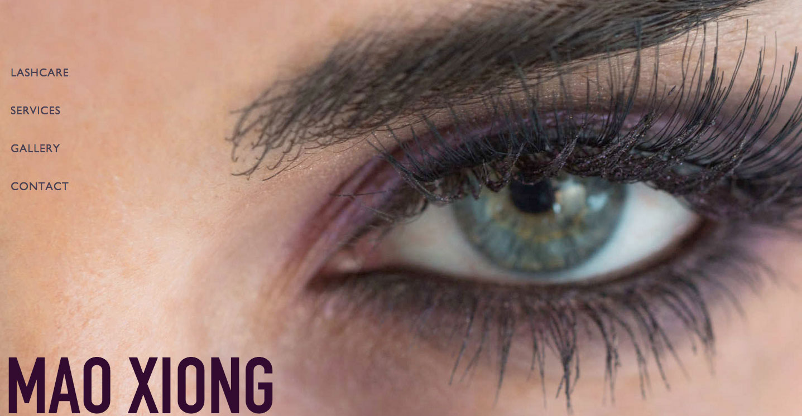
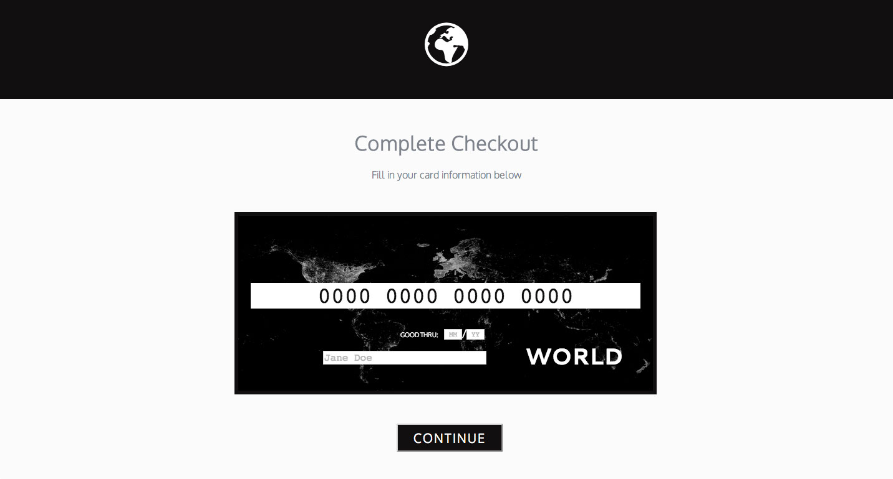
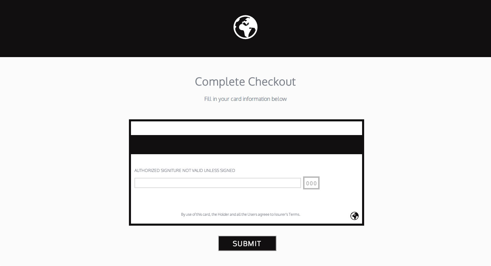

Studio106-mn.com
Studio 106 is a boudoir photography studio who create artistic, intimate portraits for their clients. This new company in Saint Paul, MN provides a unique service for women by women. They stand out among local competitors with their fashion inspired brand by giving their clients a comfortable photo shoot with an all female team. The company averages 15 bookings a day through the website.
Mao has spent most of her career doing the business side for makeup companies such as Mac, Sugar, Sigma and Dior, as well as freelance work for films and print. I needed to create a site that focused on her new independent business endeavor in eyelash extensions, while highlighting her makeup artist career. With such a large portfolio of work it was best to keep the page minimal and high fashion. Most personal sites for beauty professionals veer towards an over stylized layout that I wanted to stay away from.
I wanted to take one of the largest online shopping websites and try to reduce visual noise and focus on a simple idea "create an easy path to the products a user came to buy". I feel that Amazon is fortunate to have a niche for online shopping and a strong customer history. However, looking at the site from the perspective of a new user it would be overwhelming and diffictult to know where to begin. I think this confusion forces the user to rely on the search bar for a majority of navigation. I stripped down the landing page to a smaller set of top categories that are linked to their subcategories.
 This is an experimental concept for a credit card form. A user would fill out the credit card in place, and click the continue button activating an animation flipping the card to the back. On the back of the card, the user would complete the form, and hit confirm to make a purchase.